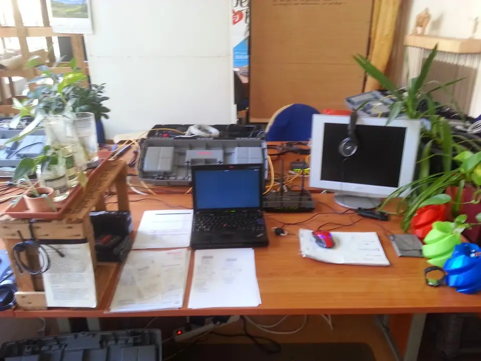

Readings
A collection of things that others have written

"It's Dark Because you are trying to hard"
“It’s dark because you are trying too hard.
Lightly child, lightly. Learn to do everything lightly.
Yes, feel lightly even though you’re feeling deeply.
Just lightly let things happen and lightly cope with them.
I was so preposterously serious in those days, such a humorless little prig.
Lightly, lightly – it’s the best advice ever given me.
When it comes to dying even. Nothing ponderous, or portentous, or emphatic.
No rhetoric, no tremolos,
no self conscious persona putting on its celebrated imitation of Christ
or Little Nell.
And of course, no theology, no metaphysics.
Just the fact of dying and the fact of the clear light.
So throw away your baggage and go forward.
There are quicksands all about you, sucking at your feet,
trying to suck you down into fear and self-pity and despair.
That’s why you must walk so lightly.
Lightly my darling,
on tiptoes and no luggage,
not even a sponge bag,
completely unencumbered.”
― Aldous Huxley, Island
"Think Like They Book Say"
"They cannot imagine if they do not see it in a book
Even when they see it it's their book that tell them how to look
Think white them think straight
Think like they book say
Think like, they think like
They think like they book say...
...Truth is not a theory that can be prisoned in any book
Word are sometimes. Prison sometimes prisms from the way you look"
-- Saul Williams - Think Like They Book Say
Discussion between Krishnamurti and Michael Mendizza
M: The world crisis is unquestionably growing more and more acute. You have said that the outer crisis, in society and the world, reflects an inner crisis in human consciousness. What do you mean by that?
K: I think that is fairly clear. The psychological content of consciousness of man is almost universal. The content of one’s consciousness is greatly similar to all other consciousness of mankind. In that consciousness man suffers, goes through a great deal of agony, conflict and depression and elation. He has enumerable beliefs, great many images about himself and about others. There is fear and the pursuit of pleasure. And there are the various types of religious divisions with their superstitions, illusions, saviors, and all that. That is the content of one’s consciousness which is really the content of humanity. Because all humanity, whether it is in the East or West, in Africa, Russia, or wherever it is, human beings go through this crisis in consciousness.
M: I’m not clear of the relationship between the crisis in our consciousness and what we see in the world?
K: Sir, to put it differently, we want order outside in the world, politically, religiously, economically, socially, we want order in our relationship with each other. We want some peace. We want some understanding. If the inward psychological state is not orderly, not conflicting, not contradicting, if that state in consciousness is quiet, steady, clear, then you can bring about order in the world. What we are trying to do is try to bring order legislatively, nationally and so on, order out there in the world, which has been proved over and over again that it totally brings about disorder.
That’s why I am saying that without inward order, in consciousness, which is in a mess, which is in a contradiction, without bringing about order inwardly, psychologically, you cannot possibly have order outwardly. And the crisis is there. We think the crisis is national, economic, social and so on. The crisis is not out there! The crisis is really inward and we’re unwilling to face that. We are all so superficial. We think by various legislative orders we’ll have some kind of peace in the world, without having order in one’s self.
M: You have said often that it is absolutely essential that man change radically. And yet for centuries man has continued in the same old patterns, the same old traditions, the same old ways. What are the consequences if he does not change?
K: The consequences are very clear. Consequences are constant wars throughout the world. I do not know if you realize that for the last 5,000 years, every year there’s been a war, human beings killing each other. And we are an accumulation of armaments, technological advancement, and the scientists, and the nationalists, and the religious people who are divided are sustaining this mad accumulation - the things that are necessary for war. It’s so obvious. Any fool can see this.
M: We have gone on without destroying ourselves so far. Is our time running out? How acute do you see it?
K: Now it’s becoming more and more dangerous.
M: How so?
K: Nuclear war. The emphasis of all the poor nations as well as the rich nations on building up armaments. One day there will be a clash, inevitably. It is the job of the generals and the politicians who prepare for war, to plan for war. That’s their job. They are maintaining it.
I wonder why human beings throughout the world don’t see this simple fact that you cannot possibly have peace on Earth if you’re nationalistically divided. Nationalism is really the beautification of tribalism and every politician right throughout the world maintains this tribalism, this division. This has been the history of mankind and nobody has applied his mind and said, let us stop all this. The scientists are sustaining it. The so called religious people are sustaining it, of course, and the politicians, it’s their job to keep everybody fighting each other.
M: It seems that for centuries our personal daily lives have been filled with fear, pain, suffering, and yet none of these have been sufficient to bring about fundamental change in us. Why?
K: Either it is indolence.
M: Ignorance?
K: No, I won’t call it ignorance - indolence, which is a form of laziness. That is, you have gotten into a habit and you sustain that habit, keep on thinking the same pattern, living the same kind of life, the parents, the grandparents, the children, they’re all following the same old mold, conforming to the same ‘cada”, framework, and really one should ask a question why human beings, though they have extraordinary knowledge, technological knowledge, know all the dangers of war, know all the dangers of poverty, the disease, they know it quite well. You hear it on television, in books. Everybody knows this and yet nobody’s willing to change. Why? Is it that they find security in the habit, in the pattern, in the mold? And they’re frightened to break away that mold. To break that pattern and see if there’s something different. Apparently very, very, very few people are willing to do that. Scientists do it in their own profession, in their own way, to break the pattern. But even though they are scientists, as human beings they’re just like everybody else.
M: So what is it going to take? What other pain or what is it going to take before we’re willing to make the change?
K: This has been really a question that’s been asked over and over again all over the world, in India, in the West and here and so on. Has suffering changed man - human suffering, pain, anxiety, fear? Though mankind has had this series of agonies that seems to have not changed man.
I am not being personal, sir, but you have heard all this, you as a human being, have been through a great deal of anxieties, suffering insecurity and confusion. Why don’t you change?
What prevents you? If each one of us asked that question, not verbally or merely intellectually as an entertainment, but asked that question most seriously and deeply, what’s your answer? What’s your answer to this problem that human beings have lived this way for millennia upon millennia - why haven’t they changed?
Why haven’t you who are listening now, why haven’t you changed? You know if you don’t change - what the consequences are. You will be national, nationalistic, you will be tribal, insular, isolated and therefore having no relationship globally, fighting, fighting, fighting, building up more and more armaments to destroy each other. Now, why don’t you, if you are at all serious in this matter, why don’t you ask yourself that question? Why am I, a human being, who have been through all this, why haven’t I changed? What would be your answer?
Either, you’re not serious. You want to live a very superficial life, and that superficiality temporarily satisfies you, or you really don’t care. As long as you have immediate pleasures, immediate satisfactions, you really don’t care. You don’t care for your children if they’re murdered. You really have no deep love, affection for them. If you had you would prevent all wars. So, apparently none of these things mean anything to you. Or probably you’re so deeply conditioned psychologically, of course we are biologically conditioned, that is a different matter, but psychologically conditioned, and one is not aware of it. Unless there is freedom from that conditioning you will go on this way.
And I also noticed, if I may point out, very few people, at least I haven’t heard anybody, talking about the disastrous nationalistic division. Nobody talks about it. Why? Is it that it’s not popular? Is it that each government says, we’re in power, we stay in power, as long as we can? Whether we are disorderly, whether we are messy, whether we are corrupt doesn’t matter, we stay as long as possible in power and guide the people in their confusion. They are confused and so out of that confusion I try to bring order to those people who are governed.
Now why don’t you change? We have explained, not only verbally, intellectually, but deeply, we have explained the causes that prevent you from change, break those causes, break those patterns, and not keep on holding to them as if they are something extraordinarily precious. They’re not. They’re impractical. War is the most impractical on Earth and yet we go on.
M: We’re going back into time. In 1929 the notion of a path represented a very rigid system for the members of the Order of the Star. When you said that truth is a pathless land, many people saw that as simply a reaction to Theosophy. Is that what you meant?
K: No, sir. If you have noticed, all religions, especially the organized orthodox religions, have always said there is only our path, our savior, our system, out belief, our rituals and only through those you will find salvation. The Hindus put it their own different way. The Christians do it very, very systematically and very clearly that there’s only one savior and if you’re not saved by that person you then go to Hell or are out of the field of light. This has been a constant song of all religions. And in India especially, they have four different kinds of paths to attain truth.
And I happen to have said many, many years ago that there’s no path to truth. Truth, according to them, is a fixed point. And if it’s a fixed point you could have as many paths as you like. But if it is not a fixed point, it’s a living thing, moving, movement in the sense not in the world of time, which is a different matter, naturally there’s no path to it. But you see, we don’t want such a dangerous outlook. We want everything fixed. We want every object to be final, which has continuity.
M: We, as individuals, feel psychologically dependent on a system.
K: Of course.
M: Why don’t these systems bring about this sense of spiritual progress that we think that they’re there to do?
K: What does a system mean? A pattern, a mold, a framework which will help you to become more peaceful, more loving, more charitable, generous and so on and so on. But in that pattern there are divisions - your pattern, my pattern, the Christian pattern, the Hindu pattern, the Buddhist. So, patterns may be dangerous altogether, because they divide people. And religions have divided people. The Protestant, the Catholic, the Hindu, the Buddhist. They’re all patterns, ways of thinking. They are rituals. They are beliefs. They are faith. They are saviors. To break away from all that requires intelligence, it requires investigation, study. Nobody is willing to do that. You don’t believe in any of all this nonsense but you keep going.
M: You seem to be the only person that says there is no path. Everybody else is offering paths, selling paths. Why are you the only one that seems to be saying that there’s no path? Why is that?
K: To see the truth of pathless land you must have a free mind. Your mind must be inquiring, asking, doubting, and to doubt is the most dangerous thing for most people, to question whether the systems really do help, or have they become rackets. Whether the racket is introduced by Indians or by the Westerners, it’s still a racket. And when they offer systems and you accept them, you are enclosed, safe, protected, you feel that. And most people want to feel protected psychologically. Naturally systems are very popular.
Institutions have never saved man, politically, religiously; they never really freed man from his sorrow, pain and so on. We know that, but systems have an extraordinary appeal to the thoughtless. And if anybody says there is no power in a system, not conforming to a pattern, to a system, has such great beauty and strength in that. You rejected it because you are accustomed to this, you feel safe, protected. At least you are certain in this that is uncertain.
M: We want somebody to tell us what to do.
K: That’s right, sir.
M: And yet you refuse to tell us what to do.
K: You see again, who is there to tell you what to do? When we are children the parents tell us what to do. That same mentality is cultivated right through life. In school we are told what to do. In college you are told what to do. In the university, right through life somebody tells you this is right, this is wrong, this should be done, that should not be done. Which means what? There is no self-investigation. There is no saying, I am really the rest of mankind, which you are, because every human being goes through a great deal of suffering, a great deal of pain, a great deal of anxiety, uncertain, confused, insecure, like you, like the rest of the world. We don’t accept that. We think that our suffering is totally separate from other people’s suffering. And so, we have this mentality that I must have somebody to tell me what to do - right from the Pope down to the poor parish priest.
M: Let’s go into this idea that ‘You Are The World.’ You brought it up just a moment ago. We live as individuals, that individuality expresses itself as race, nationality, class, and yet you just finished saying that we represent all of humanity. How can we represent all of humanity and yet manifest so many divisions?
K: Sir, first of all one must question deeply whether you are an individual at all. You are the result of your parents psychologically and genetically. You have inherited certain conditions as an American, as a Russian, as an Englishman and so on. And according to religion, you are a separate soul, so your actions are individualistic. But is that so?
Are you not the result of vast time, great evolution, inherited the experiences of thousands of people? Are you not the result of education, given information about various subjects which you use skillfully or not? And you are conditioned to be a Christian, to be a Hindu, through years of propaganda. So when we begin to inquire seriously if we are actually an individual, you begin to doubt this whole idea of individuality.
Individuality apparently means freedom. That is freedom of choice, but the choice is to move from one corner of the same field to another corner. And this movement from one corner to the other corner you call choice, progress and all the rest of it. That narrow field is your conditioning as an American, national, tribal and so on. So all through the world a pattern exists. So, one questions basically if we are an individual at all.
You have been told that you are an individual, you are an individual soul, God will save you or Jesus, somebody will save you. That pattern after 2000 years has been established in the Western world and probably 3000 to 5000 years in the Eastern World that you are a separate human being because you have a separate body, separate name, and so on. From the physical they move into the psychological, which becomes the individual, soul. Personally I question all of that because your consciousness is similar to the rest of mankind. So we are not an individual.
M: When the psychological separation disappears we begin to perceive the one movement we talked about.
K: One global unity movement.
M: You have said that the perception of that by a single individual, that the energy this releases or creates or brings about can affect the totality of humanity.
K: Even the scientists are saying this. It is the old idea of the Hindus, that each group has its own consciousness. That is, the wolf pack or the whole wolf group – when one in that group understands some danger it conveys it to the whole group. If one monkey learns something suddenly it is transferred to the whole. You have seen those monkeys in Japan. So, in a similar way, as we are the result of the animals, monkeys and so on, our consciousness is common to all mankind. I am the mankind. I am not separate from mankind.
It’s our Earth, the Earth in which we all live, it’s our Earth, not British Earth, English Earth and French Earth and American Earth. It’s our Earth on which we have to live. But we have separated ourselves, the South, the North, East, West and so on; to have a global concept, a global feeling that this is our Earth to live on and we can only live in right relationship with each other, not with the labels, as English, as French, as German, American and so on. So in the same way life is one. Our consciousness is not my consciousness or your consciousness; it’s the consciousness of all mankind. When one human being who is part of all this radically changes, surely it affects the rest of the consciousness of man.
M: How is it that the change in one human being can affect the whole?
K: Sir, look, it’s an unfortunate case, has not Hitler affected the rest of mankind? Has not the idea of a savior affected a certain part of mankind? The Buddha 2500 years ago - he has affected the whole of the East. Napoleon affected the whole history of the Western World. So, if one person is rational, sane, healthy, logical, and therefore sacred, it affects the whole of mankind naturally by his thoughts, by his books. This is what is actually happening.
M: When we see ourselves as separate individuals, what happens next?
K: You have wars.
M: How does that relate to how the concept of individuality affects the rest of humanity as well?
K: Sir, the concept of individuality is illusory. It has been maintained some time - and one has never really gone into it. We have accepted it. My question is also why do we accept that? Why do we accept what somebody says, psychologically? Biologically I have to accept. If the surgeon tells me I’ve got a certain disease that must be operated, that’s right. But psychologically why should I accept what somebody else says, when I realize that I’m the rest of mankind? Mankind is me and me is the history of mankind, the book of mankind. If I know how to read it I don’t depend on anybody.
So can I, without distortion, without prejudice, without choice be aware of the content of this book which is me? To read it very carefully, never distorting it, requires a great deal of attention, great deal of energy, intensity, immediacy. We are not willing to do all that because we think that it’s too tiresome. Tell me quickly about the book and I will do it or I will not do it. We generally may not do it.
I personally think that the psychological guidance by another, whether it is the religious guidance or the guidance of the psychologist is totally wrong. Because you’re making humanity into children who have to be guided, told, encouraged. We are all grown up human beings after five or ten million years.
M: Let us go on to another area. You say that we need to be a light to ourselves. What does that mean?
K: It means don’t seek light at the feet or the knees of any person. There is no savior, you are the only savior. You are responsible for all the things that you are doing. When you send your son to war you are responsible for that, which means you don’t love your son, which means you love yourself, your comfort, your position, your daily safety. So you sacrifice your son for your own personal comfort. And it means also to be a light to one’s self. That’s really a marvelous sense of freedom without a single burden because then, if you are a light to yourself, there is no shadow in that light.
M: You have said often that what we generally consider relationship is really made up of the images and conclusions, that the relationship is image to image and therefore it has no depth. Help me understand, what is a relationship?
K: Don’t get irritated, don’t get angry, but let’s look at it. Let’s investigate. Let’s go into it peacefully not reacting to it and saying yes, it is right, no it’s wrong, but let’s look at it. What is a relationship? You cannot live on the Earth without relationship.
M: The question is - most of what we consider relationship is based on images.
K: So what is actually relationship? What is now called relationship - a man and a woman? The man is perusing his own objects, his own fulfillment, his own desires, his own pleasures, and the woman is too. So they’re like two parallel lines never meeting. That is, perhaps, in bed. But that’s not relationship. That’s not love. So, as it is now, there is no relationship. As it is now the man builds an image about her and she builds an image about him. Each human being has not only the image of another, but also he’s got innumerable images in himself about her, about his neighbor, about the government, about the religion and so on. Now, is it these images between the man and the woman that have relationship, these pictures, these symbols? Is that relationship? Obviously not. But we are satisfied with that - because I am an individual, I must have my way, you’re an individual, and you must have your way. And that’s considered freedom and that’s leading us to some hideous world conflict.
M: What is love and what happens when we try to define it?
K: Through negation of what is not the positive exists. That is, love is not desire. Love is not pleasure. Love is not a remembrance. Love has no sense of imagery. That becomes romantic, romanticism, emotionalism and all that kind of thing. Love is not emotionalism, sentimentality. It’s as strong as death, as vital as life.
But, we have associated love with sex, which is pleasure. We have associated it with all kinds of trivial things. Love is not jealousy. Now can one be free of jealousy? Where there is love there is no ambition. Where there is love there is no authority. Where there is love there’s no possession, attachment. If you intelligently and logically observed that love is not all this and you put it out of your psychological system, then the other flowers, but it is a perfume of its own.
But when you begin to describe what it is – it is not. So the verbal explanation, the verbal measurement of what love is destroys love. And you see, love can only exist when there is no suffering. Suffering is personal. Suffering is also global. Man has suffered endlessly and he tries to combine that suffering with what he calls love. And so there’s always this contradiction, this duality. Whereas, if you deny all that which is not love, then the other thing has this immense beauty, great strength and vitality.
M: I believe we said that the only concern of religion is the total transformation of man.
K: The only function of religion, the real religion, not the accepted traditional saviors, rituals, authoritarian guidance - when you are totally free from all that, which is really nonsense, it has no meaning anymore in life because it doesn’t affect life, it doesn’t change my anxiety, one’s pain, loneliness. So, when you put away all that intelligently, after investigation, carefully, then man doesn’t invent God.
We have invented God. If God did exist at all and if he created us, he must be a pretty poor God. So we have created him. The image that exists all over the world is the result of thought, is the invention of thought, and thought is not sacred. It’s born of knowledge, experience, knowledge and memory. There’s nothing sacred. Thought is a material process. So a very, very complex question arises out of that. Can thought, time, end? That’s possible only in deep meditation. Here again the word meditation has been spoiled by all these silly gurus that have come to this country. Meditation is something tremendously serious, not something which helps you to relax, do better at work or get more money. It’s really total abnegation of the self.
M: The function of religion is really to bring about transformation.
K: That is, transform a human mind from its conditioning, and no religion is doing that. No religion has produced a good human being. By good I mean holistic, in which implied whole means healthy, sane, rational and also it means holy, a sacred human being. They have not done it. So they [religions] have no value. Man must be free from all this to find out that which is beyond time.
M: What is sacred?
K: All that we have been thinking, the rituals, the symbols in a church, all the temples and so on, they are all put there by thought. Thought has invented these things. You can’t deny that. Is thought sacred? Or is thought a material process, which is - there’s an accident, I learn from that accident and I call it into play as a memory. Memory is the result of experience, knowledge stored up in the brain cells. Thought is never complete. That is logical, rational, and thought has invented all these things called sacred. It invented the savior, invented the temples and the contents of the temples. So thought in itself is not sacred. When thought invents God, God is not sacred. So the question arises then, what is sacred? That can only be understood or lived or happen when there’s complete freedom from fear, from sorrow, and the sense of love and compassion with their own intelligence. Then, when the mind is utterly still, that which is sacred can take place.